Functional Description of USB Test IMIB
Functional Description Of USB Test IMIB
USB test with the (IMIB) Integrated Measurement Interface Box
The Integrated Measurement Interface Box (IMIB) makes it possible to test the USB ports in the vehicle. Two tests are available for this purpose in the IMIB. The CURRENT CHECK is an electrical test of the USB interface, whereby only the vehicle-side power supply and the current level of the USB connection are tested. With the MEDIA TEST, various media files are made available via USB and are played back in the vehicle.
NOTE: It is not necessary to connect the IMIB to the network or an ISID in order to carry out the USB test. The results of the USB tests are not included in the diagnosis report. The USB tests must be used as independent tools for diagnosing vehicle belonging to the BMW group. The testing of other USB components (PC, data carriers, accessories etc.) is not permitted and could cause permanent damage to the IMIB. The tested USB connection is only fully functional if both tests can be successfully completed. Only the electrical test (current check) for voltage and current can be carried out at the USB connection in the glove compartment (not the media test). If one of the two tests is not performed successfully, a vehicle diagnosis must be carried out with the ISTA. Warranty-related invoicing can only take place after a full diagnosis has taken place.
In order to carry out the USB tests successfully, the following general conditions must be taken into consideration.
- Latest software and updates installed on the IMIB.
- Battery charger connected.
- Ignition turned on.
- Connect USB cable to IMIB (do not connect USB cable to vehicle yet.)
NOTE: Only perform USB test with the USB cable provided in the scope of delivery of the IMIB. Always perform USB tests directly at the USB connection of the vehicle. Do not use extension cables, USB hubs etc.
The examples listed in the description only relate to testing on BMW vehicles. The system behaves identically for vehicles of the type MINI or Rolls-Royce.
Proceed as follows to perform the USB test:
Open up the menu on the IMIB by pressing the MENU button. Select USB TESTS using the navigation buttons, and confirm with the OK button.
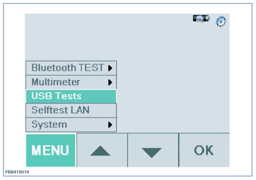
The initialization of the USB test is performed. For system-related reasons, it takes up to approx. 6 seconds until initialization is complete. After the IMIB has been rebooted, it may be necessary to wait for approx. 40 seconds.
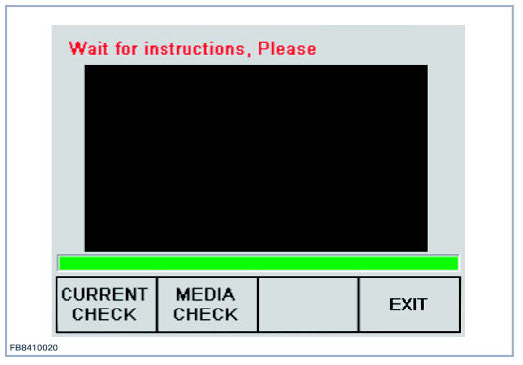
Initialization is complete when the CONNECT USB TO VEHICLE message appears on the display of the IMIB.
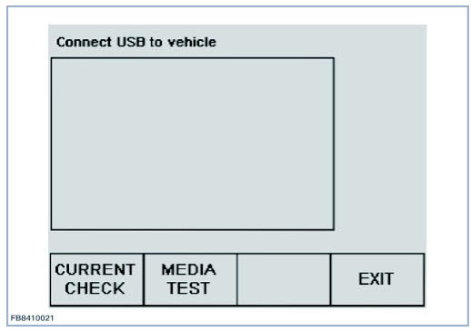
Plug the USB cable into the USB connection of the vehicle.
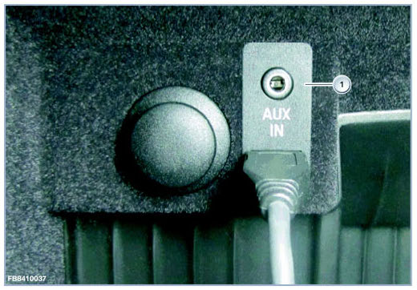
CURRENT CHECK
Start the load current and voltage test by pressing the CURRENT CHECK button.
During the test, the load current of the USB connection is increased in steps, and the voltage is measured at the USB connection at the same time. These values are shown graphically on the display of the IMIB.
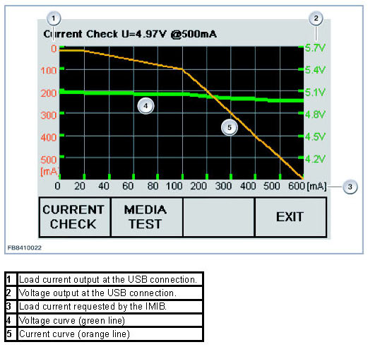
NOTE:
The current status of the measurement is displayed in the header line.
In the following graphic the USB current is 4.97V with a load current of 500mA.
The green line shows the voltage curve during this load increase.
The orange line shows the current supplied by the USB connection in the vehicle. This is increased in stages (orange line falls away) and must at least reach the 500mA - 500mA intersection (1).
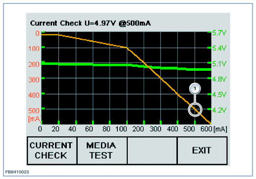
The test finishes automatically after approx. 5 seconds.
Possible fault patterns during CURRENT CHECK test
No voltage or no current during the USB test
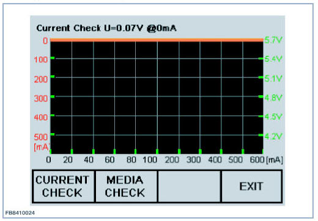
The graphics shows the case if the USB cable has not been connected or the USB connection in the vehicle is not supplying any voltage. The current supplied by the vehicle (orange line) remains at 0mA and the voltage (green line) is not visible because it is below the range shown on the display.
Troubleshooting:
- Check USB cable connection between IMIB and vehicle.
- Check lines and plug connections in vehicle.
- Check the USB connection.
- Check control unit.
- Check fuse F26.
Line resistance too high during USB test
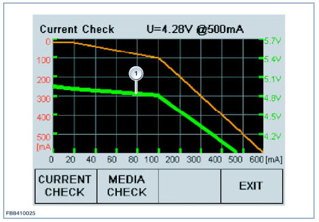
The curve progression on the green line (1) drops off significantly in the graphic that is displayed. (Voltage under 3.9 Volt at 500mA)
NOTE: With several USB devices, a voltage around 4 V is not sufficient to guarantee the function. However, the vehicle is trouble-free. In this case, use a different USB device.
Troubleshooting:
- Check USB cable connection between IMIB and vehicle (use spare cable from another IMIB if necessary).
- Check the USB connection.
- Check lines and plug connections in vehicle.
Overloading during the USB test
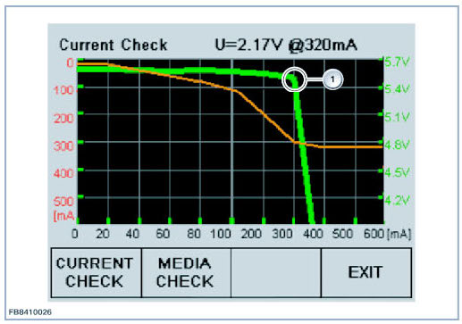
The graphic shows a current limitation at approx. 300mA (1). The vehicle is not able to deliver the required level of current. Voltage level collapses and the current is therefore limited.
Troubleshooting:
- The customer may have attached a USB hub (distributor) to the vehicle USB connection. Always run the USB test directly on the USB connection in the vehicle.
- Check the USB connection.
- Check lines and plug connections in vehicle.
- Check control unit.
NOTE: If the test was not successful, a vehicle diagnosis must be carried out with ISTA.
MEDIA TEST
The IMIB makes various media files available via USB.
Select CD/Multimedia in the menu at the vehicle via the controller.
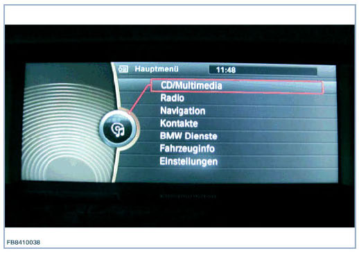
Then select External Devices.
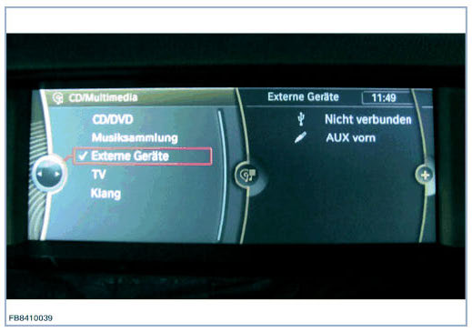
The press the MEDIA TEST button on the IMIB to initiate the connection.
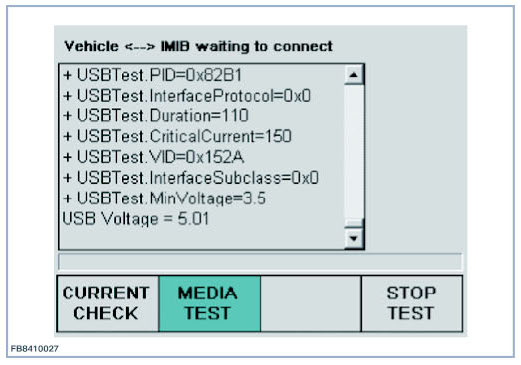
Display: VEHICLE -- IMIB WAITING TO CONNECT
NOTE:
- There is still no active data connection between the devices. The vehicle has not yet started the USB connection. The device has not yet appeared on the display of the vehicle.
If the test breaks off at this point after approx. 3 minutes, the IMIB login in the vehicle was not successful.
- If the test was not successful, a vehicle diagnosis must be carried out with ISTA.
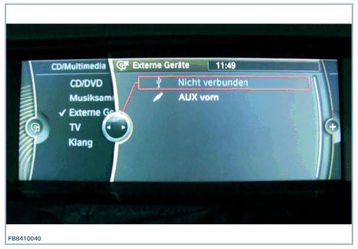
If the connection was successful, the following graphic appears on the display of the IMIB during the MEDIA TEST. The vehicle has detected the IMIB.
During the test, voltage values are displayed continuously.
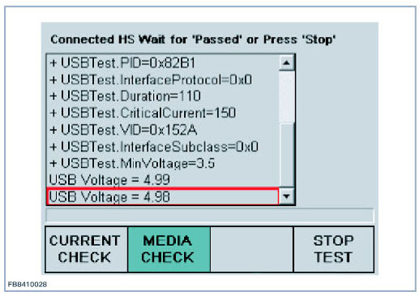
Display: "Connected XX Wait for "Passed" or Pass "Stop"
The IMIB is displayed on the display of the vehicle as a connected device under the name IMIB SOUND.
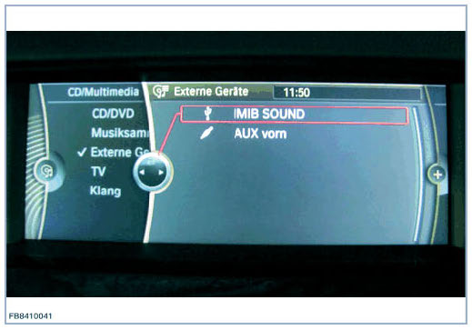
IMIB SOUND must be selected via the controller in order to display and play the music files. Check volume control in vehicle. A total of 3 media files and a sub-directory (SUBDIR) with contents are offered. To find the subdirectory, select IMIB SOUND and then select Browse directories. In vehicle with a Combox, album cover information is displayed in the form of a graphic as well as the media descriptions (genre, album and track).
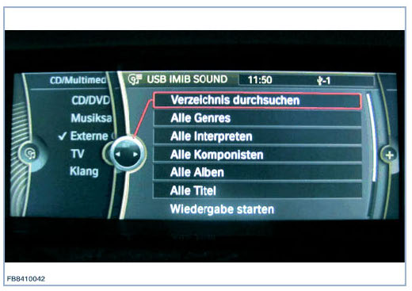
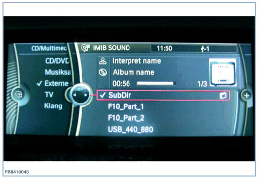
The test takes approx. 3 minutes and the progress of the test is indicated by the green bar in the display of the IMIB. It must also be possible to play the music files in the vehicle within those 3 minutes. Pay attention to the volume setting in the vehicle when doing this.
NOTE: On completion of the test, the data link between vehicle and IMIB is terminated automatically. The IMIB is no longer shown on the display of the vehicle as IMIB SOUND.
No errors during media test
If the following test conditions have been met:
- Voltage within defined limits (greater than or equal to 4.75V)
- The data connection was successful
Then the test is completed with the display TEST PASSED. The test was successful.
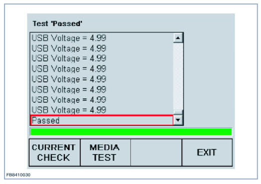
NOTE: The test can be restarted by pressing the 'MEDIA TEST"' button. The test can be repeated any number of times.
Interruption of test in progress
The ongoing test can be aborted by the user by pressing the 'STOP TEST' button. Whenever the test is stopped, no result is then available. The entire test must be run through in order to obtain a test result.
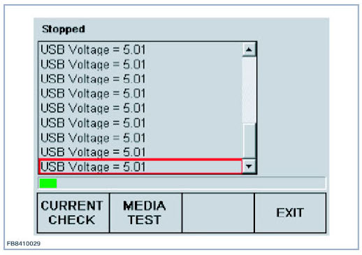
Status messages
The following status messages can appear in the list on the display of the IMIB:
- TESTING = Test is active
- PAUSING = Cooling-down period within the IMIB
- CONNECTING = Negotiation between the two subscribers (IMIB and vehicle) whilst connecting
- ABORTED = Aborted by user
- COMPLETED = Test completed
- IDLE = Idle state
- FAILED = Test was unsuccessful
- VBUSNOTPRESENT = Attempt to make a data connection without USB voltage (e.g. cable not connected)
- VOLTAGETOOLOW = USB voltage less than 4.75V
- UNKNOWN = Unknown error
This information must be included in the diagnosis depending on requirements.
We can assume no liability for printing errors or inaccuracies in this document and reserve the right to introduce technical modifications at any time.